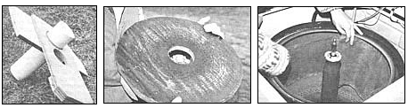

PHOTOS BY THE AUTHOR
FROM LEFT: A close-up of the apparatus I constructed to convert the family washing machine into a cider press. The plywood brace fits around the agitator shaft, and the PVC ""fruit chute"" directs the apples to the . . . shredder, which is made from the plywood and over 400 panel nails. . . We line the washer basket with nylon and fiberglass to prevent the pump's clogging with pulp.